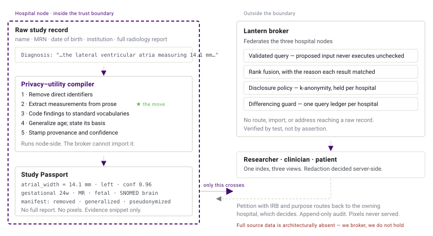
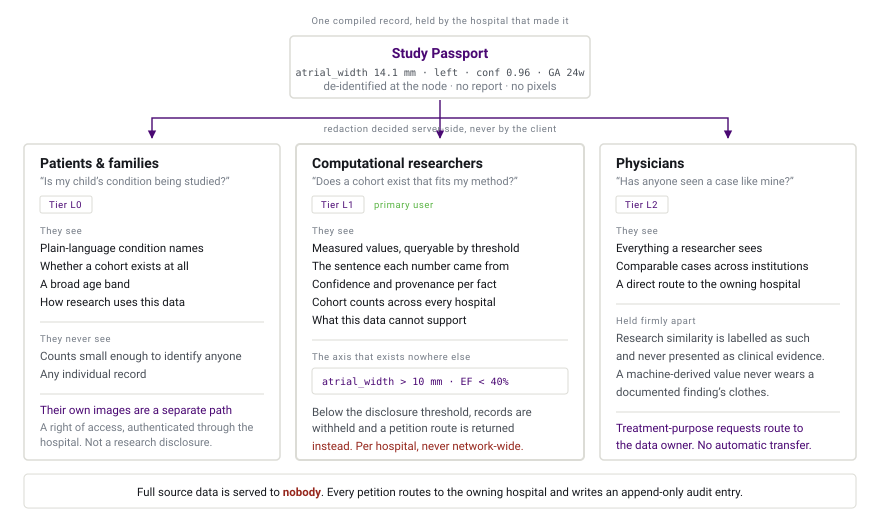

Finding the scans without moving them
A child's MRI can help thousands of other children, but only if a researcher can find it, and only if finding it never puts that child's privacy at risk.
The problem
A child is treated for a brain tumor. Every few months there is another MRI, and a family waits to hear whether it has grown. Researchers want to build tools that measure those changes more consistently than any single clinician can. To do that well, they need examples, from many children, many scanners, many hospitals, many stages of disease.
Pediatric brain tumors are uncommon. No single hospital holds enough cases. The scans very likely already exist, scattered across a network of children's hospitals. Today there is no reliable way to find out where.
So researchers approach hospitals one at a time. They spend months on introductions, approvals, and study descriptions before they learn whether enough suitable data even exists, let alone receive authorization to look at it. Meanwhile every hospital is doing the right thing: protecting patients under federal, state, contractual, and institutional obligations that do not permit gathering everything in one place.
The bottleneck is not unwillingness. It is that discovery and access have been welded together. You cannot ask "does this data exist?" without effectively asking "may I have it?"
What Lantern does
Lantern separates those two questions.
Each hospital compiles its own studies into a de-identified Study Passport, a structured description of what a scan contains and what it can support, generated inside the hospital's own boundary. Only the passport travels. The images never do.

A researcher searches across the network, sees what exists and where, and evaluates whether the cohort suits their work. When they need the underlying data, they submit a petition that routes to the hospital that owns it, carrying their IRB number and stated purpose. Every request is written to an audit trail that cannot be edited afterward.
What we found in the data
Before designing anything, we measured the corpus we were given. One finding reshaped the entire project: 78% of the radiology reports contain quantitative clinical measurements written into the prose, ventricular widths in millimeters, ejection fractions, gestational age in weeks.
A radiologist has already measured a child's lateral ventricular atrial width at 12.4 mm. That number sits in the third sentence of a paragraph. Which makes it, at the same time, invisible to search and unsafe to share, because free-text reports are the densest concentration of identifying information in the record.
Today a researcher can search for "fetal MRI." They cannot search for "fetal MR with lateral ventricular atrial width over 10 mm", and 10 mm is not an arbitrary number, it is the diagnostic threshold for fetal ventriculomegaly.
Lantern extracts those measurements inside the hospital boundary and indexes the numbers. The full report never leaves; what travels with a result is the measured value and a short evidence snippet, so a clinician can check the number against the phrase it came from without receiving the record. The researcher gains a search axis that does not exist anywhere today, and the hospital releases strictly less free text than it does now.
One index, three populations
The same compiled passport serves three very different questions, and the interface answers each one differently. Redaction is decided on the server by role, so what a person sees is determined by who they are rather than by what their browser asks for.

Computational researchers get the axis that does not exist elsewhere. They can filter by measured value rather than by keyword, see the sentence each number came from, and read a field on every passport naming what the data cannot support.
Physicians get to find comparable cases across institutions, with research similarity held firmly apart from clinical evidence and labelled as such. Requests for a study route to the owning hospital, and no source data moves automatically.
Patients and families get plain language, an honest answer about whether their condition is being studied, and counts that deliberately stop being precise when precision would identify a child. Access to their own images is a separate, authenticated path through the hospital, because a right of access is not a research disclosure.
Who built it
Lantern was built in a single five-hour session at The Open Accelerator Real-World Healthcare Hackathon at Red Hat Boston, for a challenge brought by Boston Children's Hospital.
The team is a working cooperative of humans and AI agents from The Real Cat AI Labs, with regulatory and quality direction from forty combined years of FDA, EMA, and QARA practice in medical devices and clinical research. That background is why this project leads with the de-identification evidence rather than the search box: in this domain, the thing that has to be right is the part nobody sees.
The source is open under the MIT license, and no real patient data was used at any point, deliberately, on day one.